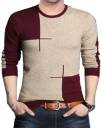

<div>
	
	
	
</div>

<div>
	
</div>

<script type="text/javascript">
	function change_image(myvar){
		// console.log(myvar)
		// console.log(myvar.getAttribute("src"))
		myvar1= myvar.getAttribute("src").replace("128","880")
		// console.log(myvar1)
		document.querySelector("#mainimg").setAttribute("src",myvar1)
	}
</script>